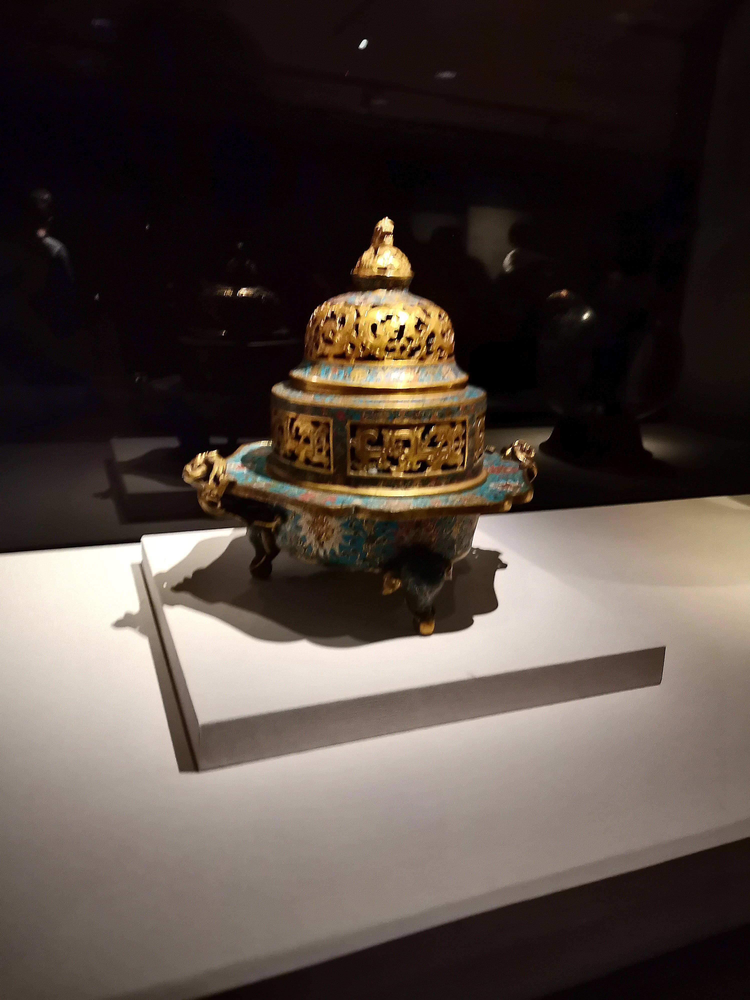
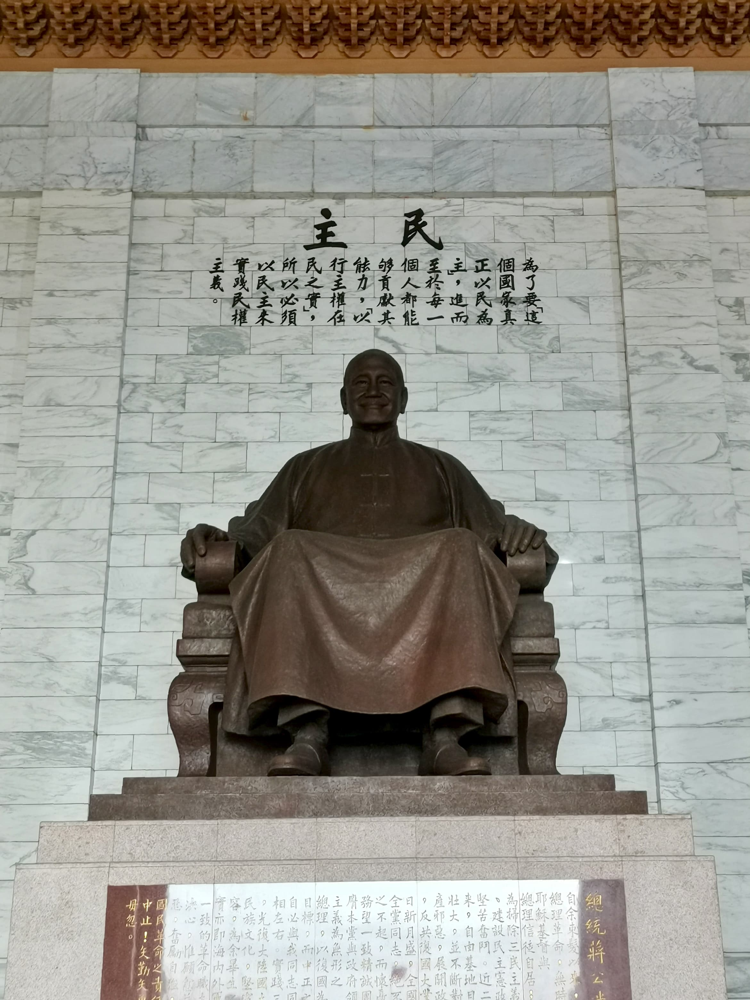

| National Palace Museum 1. Bagaimana sejarah awal dibangunnya national museum? Apa tujuan dibangunnya museum ini? Para tulisan berharga ini terpaksa berpindah-pindah di Beijing, Tiongkok, Nanjing, hingga akhirnya dibawa ke Taiwan. Tujuan dibangunnya museum ini adalah untuk mengenalkan dan mengedukasi publik & pelestarian warisan budaya Tiongkok. 2. Pilih satu artefak dan jelaskan maknanya pada zamannya. Cloisonné censer adalah artefak yang digunakan sebagai aroma terapi untuk mengisi ruangan yang bagus, mewah dari jendela info menunjukkan bahwa orang dari masa lalu pun tidak mengabaikan estetika. 3. Lakukan wawancara dengan pemandu untuk mengetahui contoh peninggalan masa awal yang masih digunakan masyarakat Taiwan hingga saat ini! Jar dinding dari dulu hingga sekarang masih dipakai. Akan tetapi, pada masa Rococo, jar bisa dipakai sebagai medium seni. Pada zaman modern, fungsi jar sudah berubah dari artistik dan sekarang lebih fokus kepada kegunaan.  Chiang Kai Shek Memorial Hall 1. Fungsi masa lalu dan sekarang: Masa lalu: Sebagai monumen peringatan untuk menghormati Chiang Kai Shek. Sekarang: Sebagai tempat wisata & budaya. 2. Apa peran Chiang Kai Shek dalam membentuk Taiwan? Ia membangun pemerintahan yang stabil dan juga militer yang kuat. Ia juga membantu untuk membentuk identitas Taiwan. 3. Usaha membangun persatuan & identitas nasional: Pesan umum adalah lewat reformasi. Pengaruhnya terlihat dari cara orang Taiwan mengingat diri mereka “Taiwanese”, dan bukan “Chinese.”  |